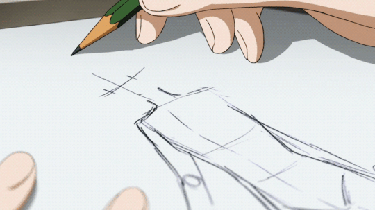

Like every artists, I owned mountains and mountains of sketchbooks.
 Drawings filled mainly from anime and video games popularized of the time. Looking back, the drawing were cringe-y and got rid of them. I wish I haven't. They would've been a good example of how much I changed as an artist. Up until 2012, I obtained an iPad 2nd Gen tablet from Mom! Still functions and continue to draw with it to this day! Looks like my art is becoming much easier...or so it seems...
(Click the image to see why...)
Looks like my art is becoming much easier...or so it seems...
(Click the image to see why...)